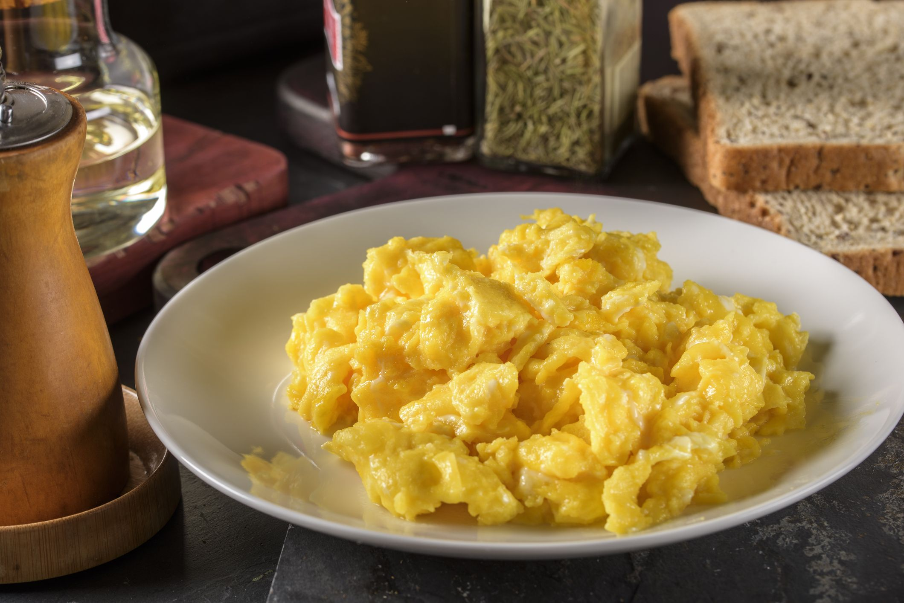

Scrambled Eggs

A plate of scrambled eggs
A classic American breakfast dish that is not only simple to make but also ready to eat in less than 5 minutes! To get started, this is what you'll need:
Ingredients
- Eggs
- Milk or water if you like your eggs creamy
- Oil of your choice to help keep the eggs from sticking; you may also use butter for a richer flavour
- Salt and pepper
Steps
- Crack your eggs into a bowl
- Beat the eggs using a fork or a whisk, until the yolks and egg whites have been blended
- Turn your stove on to low to medium-low heat
- Heat your pan with your chosen oil or butter for 1-2 minutes
- Add your beaten eggs to the pan and quickly stir the mixture around with a spatula and collect the forming curds into a pile
- The eggs are ready once the eggs are no longer runny, but still moist; move onto plate and add your seasoning, done!